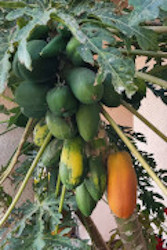
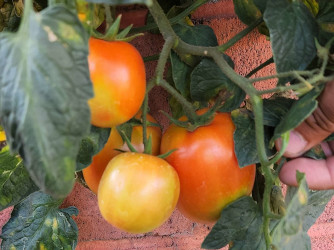

Welcome

Welcome to Gardening Knowledge.com. Here you will find a lot
of information on gardening.
Whether you are beginner or an
experienced gardener there is something here for everyone.
Regardless of your skill level in gardening there is something here for you.
What is gardening all about and why it's an excellent hobby

Gardening has a lot to offer those that take it on as a hobby. Not only do
the various plants help to make your house look more beautiful, but many
plants have different uses.
Fruits and vegetables are very popular
plants to grow in the home garden since not only do you save money
on groceries by growing your own food, you also get the satisfaction of growing
something yourself.
What to expect in gardening
Gardening is both a very rewarding hobby but also a hobby that requires a lot of
attention for things to go smoothly.
As such expect to have some traverse
some learning curves along the way but as you learn more and more you will
become a great gardener in no time.